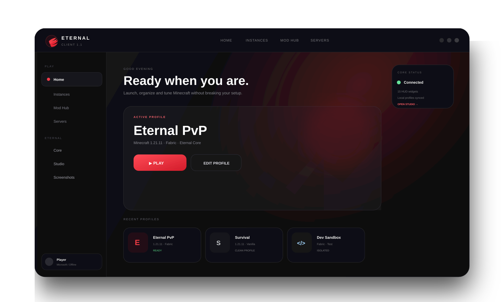
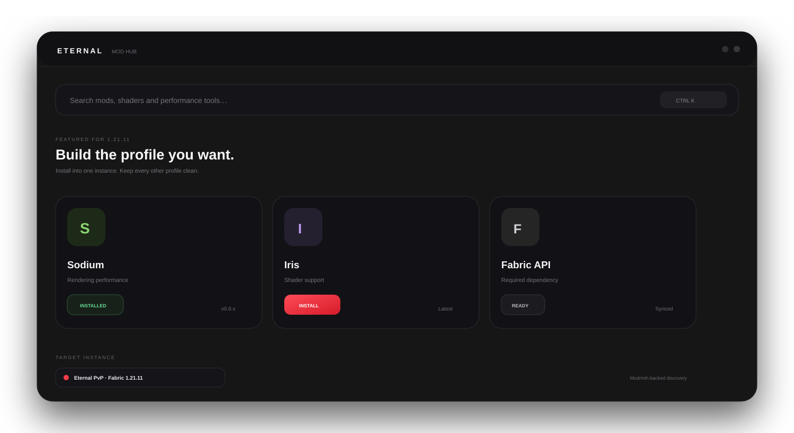
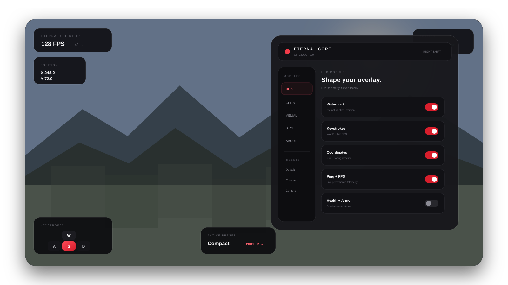

Your profiles, organized your way.
Keep settings, mods and worlds separate. Build dedicated PvP, survival, development or testing instances without mixing files.
A powerful launcher. An advanced in-game client.
Everything you need to play Minecraft your way.

Manage Minecraft with clean isolated instances, real Modrinth integration, server tools, Microsoft and offline accounts, and Eternal Core.
Explore the launcher →Keep settings, mods and worlds separate. Build dedicated PvP, survival, development or testing instances without mixing files.
Search real Modrinth projects, filter by loader/version and install into the exact instance you choose.

Tune HUD, visual and client options in Eternal Studio and carry those settings directly into Eternal Core.

Combat-ready HUD. Cleaner visuals. Real utilities.
Your Minecraft, shaped your way.

Install the Windows launcher or take Eternal Core standalone.